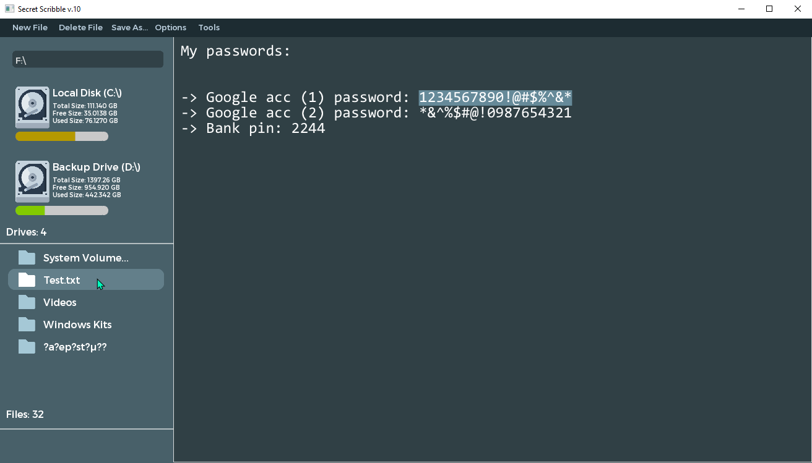

Secret Scribble
By Drimiteros

Secret Scribble is an essential tool that mainly allows you to create ecrypted files in text format and access them only by loggin in, offline to the app. On top of that and other basic functionalities like
password generation and what not, the app provides some other useful features that make it act as a file manager. Like disk info, file browsing / searching / execution to maximize efficiency.
Please note that the app is in early development. It will keep improving update by update, taking heavy inspiration from user feedback.
Free "Download" available at late 2024 - early 2025! See "News" in the page's header^
Please note that the app is in early development. It will keep improving update by update, taking heavy inspiration from user feedback.
Free "Download" available at late 2024 - early 2025! See "News" in the page's header^